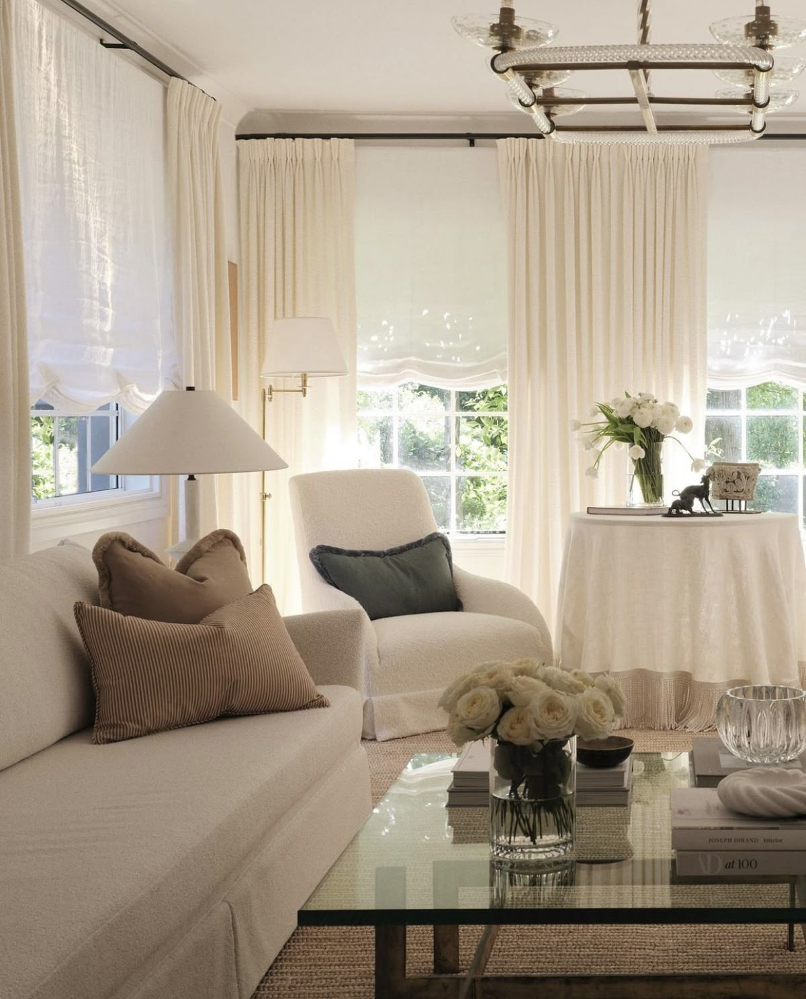
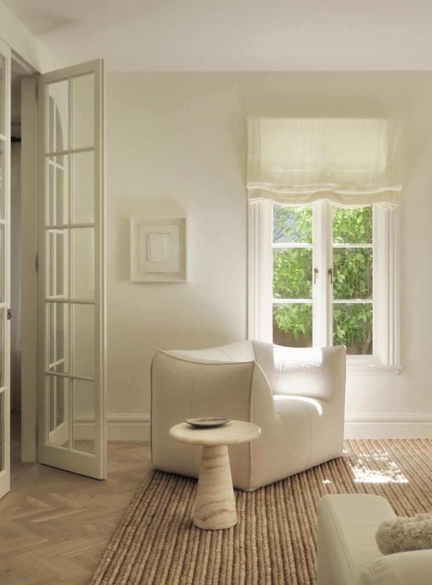
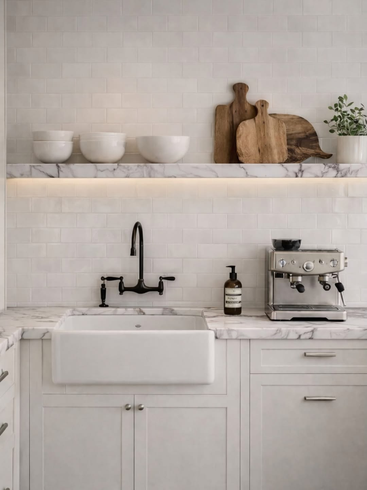
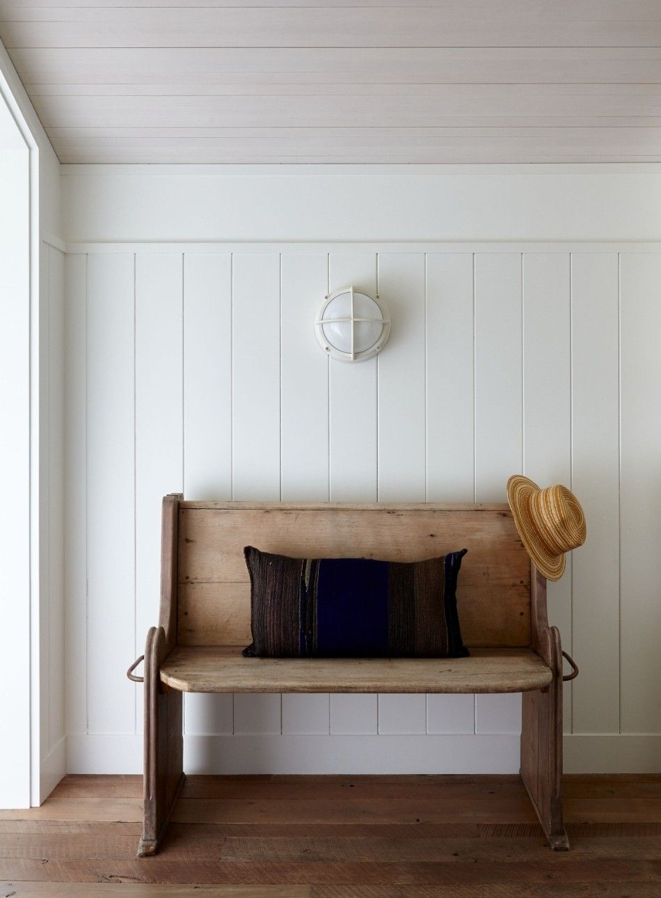
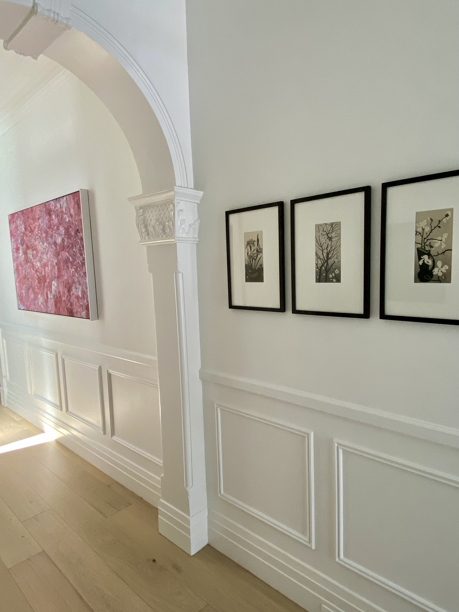
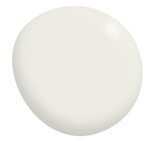
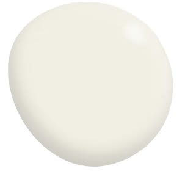
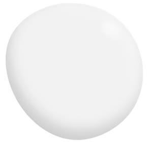
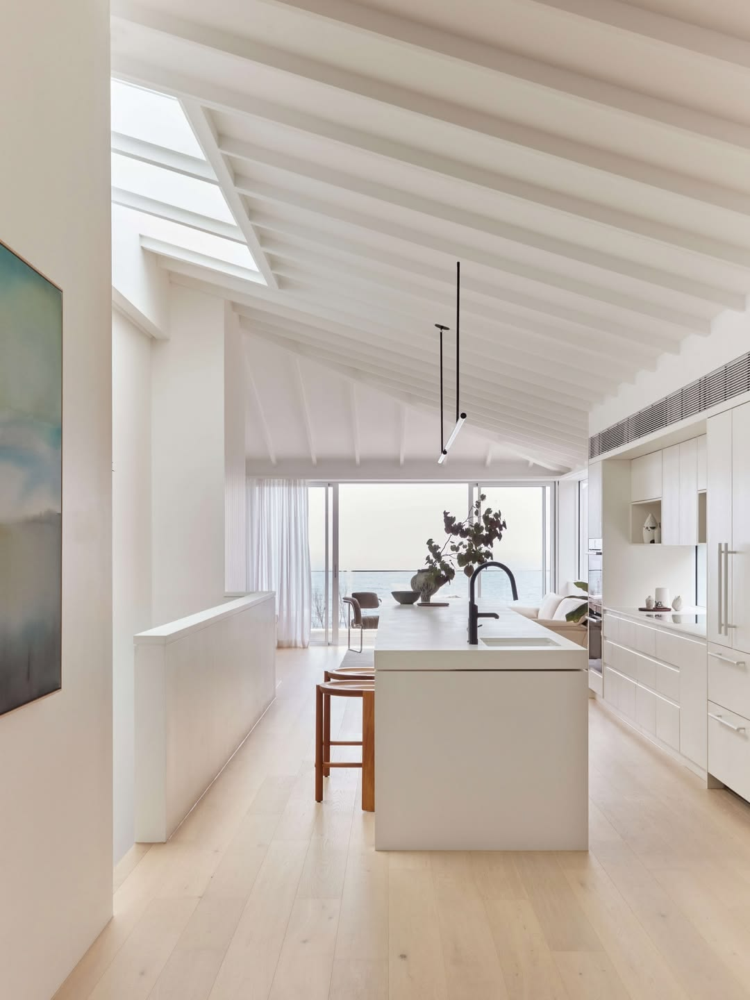
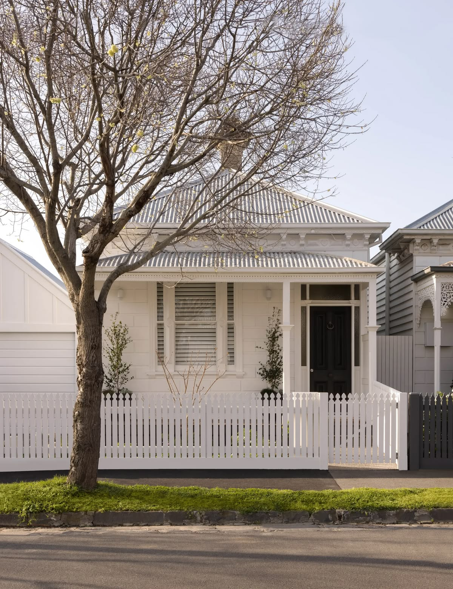

There are hundreds of whites on the market, each carrying a different undertone, a different depth, and getting it right requires understanding how light moves through your space and what materials you are working alongside. Here is what I tell every client before they reach for that first paint swatch.
Understanding Undertones
Every white has an undertone, and that undertone is what you are really choosing when you select a paint colour. Undertones fall into three broad categories: warm (yellow, pink, red), cool (blue, green, grey), and neutral. A warm white feels creamy and inviting; a cool white feels crisp and contemporary. Neither is better, but one will almost certainly suit your space better than the other.
The challenge is that undertones are rarely visible on a paint swatch under hardware store lighting. They only reveal themselves in the context of your actual walls, alongside your fixed finishes and under your specific light conditions. That is why testing properly, in your own space, is non-negotiable.


Warm white pairing well with timber, linen, and natural stone in this traditional home via Phoebe Nicol Interior Design.
Our Whale Beach House project incorporating cool white for a clean, contemporary and airy space with strong natural light and minimal detailing.
The Dos
Test large samples in your actual space
Start with colour swatches to eliminate a broad range quickly. Dulux A4 Colour Stickers are ideal for this - easy to apply directly to the wall and large enough to give a more honest reading than a standard chip. Include at least one warm and one cool option so you can compare how each sits against your timber, stone, or other fixed elements.
Once you have narrowed the field to two or three contenders, purchase sample pots and paint a minimum A3-sized swatch directly onto the wall - not onto card that you move around. Card catches different light at different times and will mislead you. Live with your wall patches for at least 48 hours and observe them through the day: morning, midday, late afternoon, and under your artificial lighting at night. The white that looks right at 10am may look completely different at 6pm under downlights.
Consider your fixed finishes first
Your flooring, benchtops, cabinetry, and joinery are the fixed elements in the room. They are costly to change and they dictate which undertone family your white needs to sit in. Warm timber floors and honey-toned joinery will clash with a stark blue-white; cool grey stone will be overwhelmed by a yellow-cream white. Your wall colour should support what is already in the room, not compete with it.


Fixed finishes - stone, timber, and joinery - should always inform your white selection before any other consideration.
Marble benchtop and shelving and subway tile splashback each carry their own undertone - the white must sit comfortably alongside these finishes.
Use the same white throughout (mostly)
Using one white across your walls, ceiling, and architraves creates a cohesive, considered result that makes a space feel larger and calmer. Where variation works well is between your walls and your joinery, where a slightly warmer or cooler version of the same tone can add subtle depth without visual noise. If you want to introduce a second white, ensure it sits in the same undertone family.

White V-groove panelling walls, with limed ceiling panelling in a similar tone creating a cohesive, yet restrained palette of materials.
The Don'ts
Don't choose a white from a chip alone
Paint chips are useful for narrowing down a shortlist, but they are never the final decision. The scale of a chip is far too small to read accurately, and the lighting in a paint store is rarely representative of real conditions. Use chips to identify three or four candidates, then test those at scale in your space before committing.
Don't assume your builder's standard white is right for you
Most builders use a standard bright white - often Dulux Vivid White or similar - as their default. This is a practical, cost-effective choice on their part, not a considered design decision. Vivid White is a cool, high-contrast white that suits certain spaces well but can feel harsh and clinical in others, particularly in older homes or rooms without abundant north-facing light. If you are painting a new build or renovation and your builder is offering a standard white inclusion, it is almost always worth upgrading.
Don't ignore how your artificial lighting changes the colour
Warm globe lighting (below 3000K) will shift any white toward yellow or gold at night. Cool daylight globes (above 4000K) will push whites toward blue or grey. If your home runs on warm globe lighting throughout, a white with a cool or neutral undertone will balance out, sitting closer to true white once the lights are on. Knowing your globe temperature before you choose your white is a step most people skip, and it explains a great deal of the "why does this look different at night" questions I hear.

White panelling and archway in our Mosman Federation hallway highlighted in a semi-gloss for a tonal difference to the matt finish of the walls and ceiling.
Our Top Five Go-To Whites
To give you a starting point, here are the five whites I return to most often across different project types.
Dulux Snowy Mountains Half Strength is a warm, slightly creamy white with a gentle yellow undertone and a touch more depth than Natural White - a useful step up when you want warmth without committing to a full off-white. It works well alongside most timbers, warm-toned joinery, and natural stone, and holds up particularly well in south-facing rooms that lack abundant natural light.
Dulux White on White is a clean, cool white with a gentle blue undertone and a high light reflectance value that makes it excellent at bouncing light around a room. It suits contemporary, minimal interiors and works particularly well alongside cool-toned stone, marble, and grey finishes. Avoid pairing it with warm timbers or honey-toned materials, which will bring out the blue undertone and create an uncomfortable contrast.
Porter's Paints Popcorn is a neutral white with just enough warmth to feel considered rather than clinical - versatile across most light conditions and a reliable all-rounder for renovations where one white needs to work across multiple spaces. It sits particularly well alongside oak joinery, concrete, polished stone, and linen.
Taubmans Cotton Sheets is a clean, delicate white with soft warm undertones, perfect for creating a fresh, settled look. This versatile shade reflects natural light beautifully and works well in both modern and heritage homes.
Resene Alabaster is a warm off-white with a gentle cream-yellow undertone that has a beautiful, settled quality on the wall in natural light alongside organic materials. Resene formulates with slightly richer pigments than some Australian brands, so testing a large swatch before committing is especially important.



Dulux Snowy Mountains Half Strength
Taubmans Cotton Sheets
Dulux White on White

This amazing home by Carla Middleton Architecture is white throughout the ceiling, island, and cabinetry creating a seamless coastal backdrop. Paint selection here was informed by the quality of north-facing ocean light entering the space.
Which Paint Where?
Once you have settled on your white, it is worth understanding which paint type to use for each surface. Not all paints are interchangeable - different surfaces and exposures require different formulations, and using the wrong product can affect both durability and final finish quality.
Interior walls: A primer or prep coat first if the surface is new, previously unpainted, or in poor condition, then a low sheen interior wall paint. Low sheen is the most forgiving finish for walls and the easiest to touch up over time.
Interior woodwork and joinery: A water-based semi-gloss enamel. Semi-gloss gives joinery the hard-wearing, wipeable surface it needs while maintaining a crisp finish.
Ceilings: A dedicated ceiling paint, not your wall paint. Ceiling formulations are designed to minimise splatter, dry without roller texture, and reduce the appearance of surface imperfections.
Exterior walls: A low sheen exterior paint with built-in weather resistance. Exterior formulations are engineered to handle UV exposure, moisture, and temperature variation that interior paints simply are not built for.
Exterior trims: A semi-gloss exterior enamel, water-based or solvent-based depending on your painter's recommendation and the condition of the substrate.

Exterior whites require formulations built for UV exposure and weather variation - not the same product as your interior walls.
A Final Note
Choosing a white rewards patience. Spend a few days with your samples, photograph them at different times of day, and hold your fabric swatches, timber, and any other finishes alongside them. The right white will become obvious; it will recede into the background in the best possible way and let everything else in the room come forward.
If you are renovating, refreshing a single room, or simply not confident about where to start, colour selection is exactly the kind of decision an Initial Consultation is designed to resolve. It is one of the most impactful changes you can make to a home, and one of the easiest to get wrong without the right guidance.